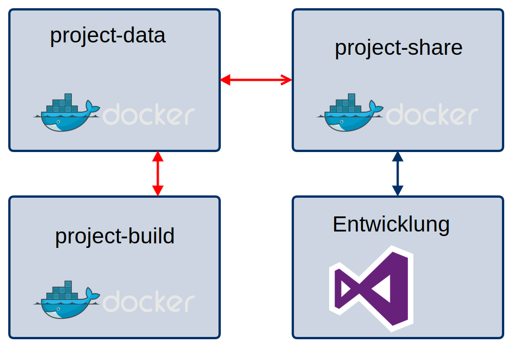
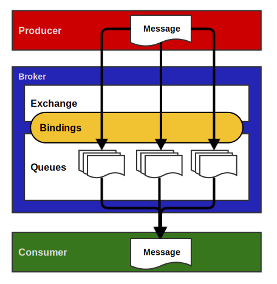
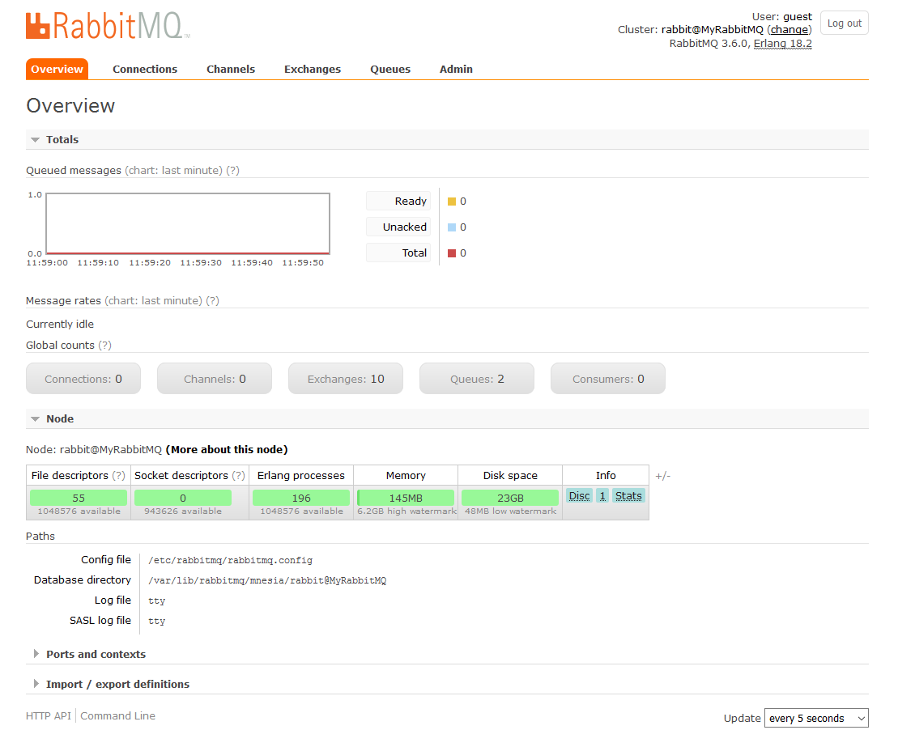
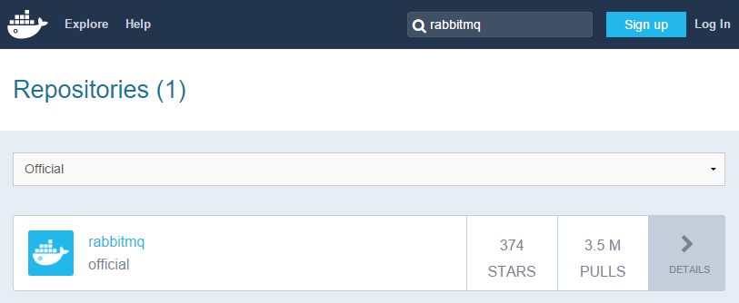
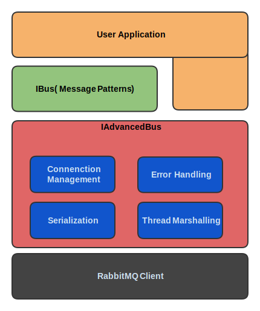
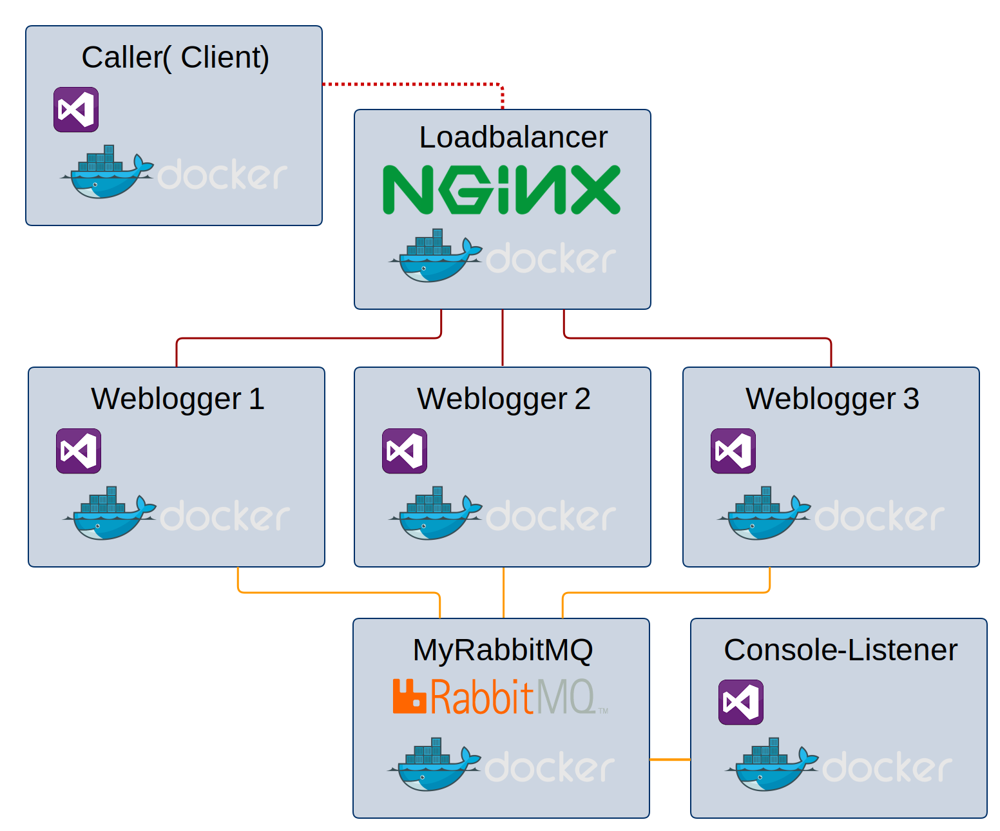
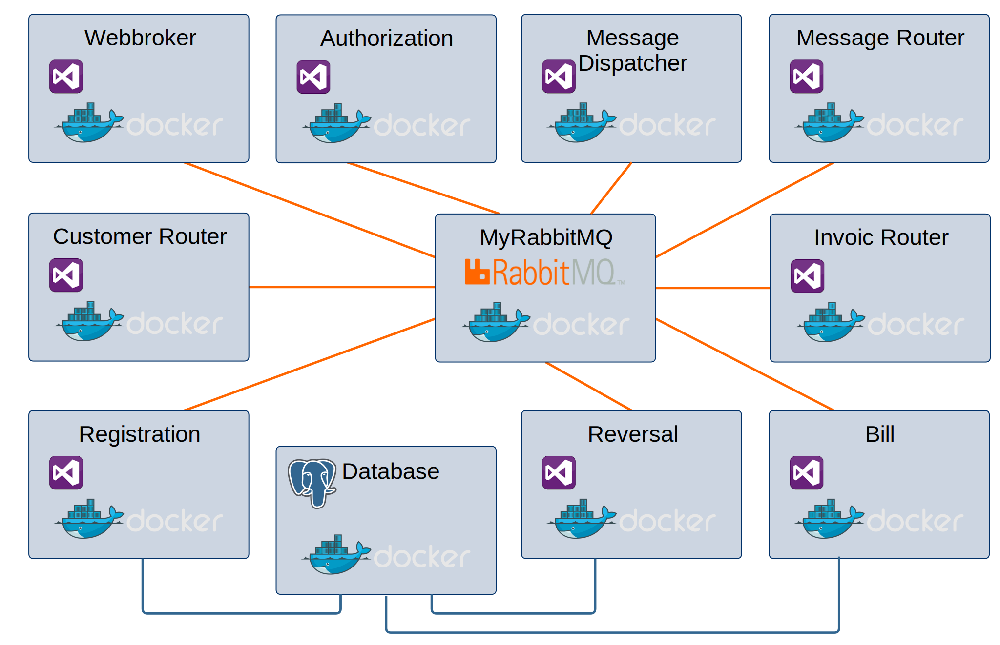

Microservices mit .NET und RabbitMQ
Spartakiade 2016
Frank Pommerening

- Senior - Softwareentwickler
- Consultant
- Softwarearchitekt
frank@pommerening-online.de
Gründung: Mai 2012
Anzahl Mitarbeiter: 8 feste
Branchenfokus: Energiebranche
| Consulting (fachlich & IT) | Software-Entwicklung |
|
|
Einrichtung Infrastruktur

$ docker run -d --name project-data
fpommerening/spartakiade2016:project-data
$ docker run -d --name project-share --volumes-from project-data
-p 445:445 fpommerening/spartakiade2016:project-share
RabbitMQ - ein Überblick
Was ist RabbitMQ?
- Message Broker / Queue Manager
- System um Queues zu verwalten
- Nachrichten von Systemen empfangen
- Nachrichten zwischenspeichern
- Nachrichten nach Regeln an Systeme zustellen
- Erstellt in Erlang / OTP
- Erlaubt Entkopplung von unterschiedlichen und unabhängigen Anwendungen
Nachrichtentransport
12 Begriffe sollt ihr sein
AMQP (Advanced Message Queuing Protocol)
Protokoll zur Kommunikation über Systemgrenzen
Produzent (Producer) Anwendung, die eine Nachricht erstellt
Konsument (Consumer) Anwendung, die eine Nachricht empfängt
Nachricht (Message)
Information, die zwischen Produzent und Konsument ausgetauscht wird
Warteschlange (Queue)
Speichert die Nachrichten zwischen
Verbindung (Connection)
TCP Netzwerkverbindung zwischen Anwendung und RabbitMQ broker
Channel
Virtuelle Verbindung innerhalb der TCP-Verbindung
Binding
Verknüpfung zwischen Queue und Exchange
Routing key
"Adresse", nach welcher der Exchange entscheidet, in welche Queue er die Nachricht leitet.
Benutzer (User)
- Zugangsdaten (Benutzername / Password) für RabbitMQ
- Zuordnung von Rechten (Lesen, Schreiben, Konfigurieren etc.)
- Definition global oder für einen spezifischen virtuellen Host
Vhost (virtual host) Erlaubt, Anwendung auf einer RabbitMQ Instanz zu isolieren
Exchange
- Fanout Exchange
- Eingehende Nachrichten werden an alle verbunden Queues gesendet
- Keine Beachtung der Binding-Konfiguration
- Direct Exchange
- Producer erstellt Routing Key
- Binding Key der Queue muss exakt passen
- Topic
- Ähnlich dem Direct Exchange
- Einsatz von Platzhaltern, z.B. Wort (*) / mehrere Worte (#)
- Header Exchange
- Routing anhand von Headerinformationen der Nachricht
RabbitMQ - Installation
Installation Windows
Erlang OTP Download (Voraussetzung)RabbitMQ Download
Installation Linux
apt-get install rabbitmq-server
Management Plugin
Infos
Docker
Standardimage auf Dockerhub Starten RabbitMQ Instanz
$ docker run -d --hostname my-rabbit --name firstRabbit rabbitmq:3
Starten mit Management Plugin
$ docker run -d --hostname myRabbit --name myRabbit
-p 5672:5672 -p 15672:15672 rabbitmq:3-management
EasyNetQ
- Einfach
- Open Source
- Modular
Warum nicht direkt
Subscriber
var factory = new ConnectionFactory() { HostName = "localhost" };
using (var connection = factory.CreateConnection())
using (var channel = connection.CreateModel())
{
channel.ExchangeDeclare(exchange: "logs", type: "fanout");
var queueName = channel.QueueDeclare().QueueName;
channel.QueueBind(queue: queueName, exchange: "logs",
routingKey: "");
var consumer = new EventingBasicConsumer(channel);
consumer.Received += (model, ea) =>{
var message = Encoding.UTF8.GetString(ea.Body);
DoSomething(MyMessage.Deserialize(message)); };
channel.BasicConsume(queue: queueName, noAck: true,
consumer: consumer);
}
var factory = new ConnectionFactory() { HostName = "localhost" };
using (var connection = factory.CreateConnection())
using (var channel = connection.CreateModel())
{
channel.ExchangeDeclare(exchange: "logs", type: "fanout");
var message = new MyMessage {Content = "Hallo Welt"};
var body = Encoding.UTF8.GetBytes(message.Serialize());
channel.BasicPublish(exchange: "logs", routingKey: "",
basicProperties: null, body: body);
}
Vorteile
- Messaging Pattern, z.B. Publish/Subscribe
- Routing Strategien
- Serialisierung / Deserialisierung als JSON (lesbar)
- Handling von Thread für Konsumenten
- Subscriber Reconnect
- QoS / publisher confirm
- Fehlerbehandlung
API Design
EasyNetQ Einstieg
Verbindungsaufbau
using System;
using EasyNetQ;
namepace FP.Spartakiade2016.Connecting
{
public class Programm
{
public static void Main(string[] args)
{
var myBus = RabbitHutch.CreateBus("host=myRabbit");
}
}
}
Verbindungsoptionen
| Option | Standardwert | Bemerkung |
|---|---|---|
| host | 5672 | DNS-Name/IP[:Port] |
| username | guest | |
| passwort | guest | |
| prefetchcount | 50 | Anzahl der Nachrichten, die gleichzeitig abgerufen werden |
| timeout | 10 | timeout in Sekunden |
| publisherConfirms | false | Erzwingt eine Annahmebestätigung |
Publish / Subscribe
Sendet eine Nachricht an beliebig viele EmpfängerWenn kein Empfänger definiert wurde, geht Nachricht verloren (keine Speicherung / Verarbeitung)
Zieltypen der Bestellung müssen übereinstimmen
Polymorphy ist möglich
myBus.Subscribe<MyClass>("MySub",
msg => DoSomething(msg));
myBus.SubscribeAsync<MyClass>("MySubAsync",
msg => DoSomethingAsync(msg));
var msg = new MyClass{};
myBus.Publish(msg);
myBus.PublishAsync(msg);
Topic Based Routing
Sonderform des Publish / SubscribeNeben dem Zieltyp muss auch das Thema (Topic) passen
Im Thema sind Platzhalter möglich
myBus.Subscribe<MyClass>("MyTopicSub",
msg => DoSomething(msg), x => x.WithTopic("MyTopic"));
var msg = new MyClass{};
myBus.Publish(msg, "MyTopic");
Request / Response (RPC)
Sendet eine Nachricht und erwartet eine AntwortMatching über Typen der Anfrage und der Antwort
Exception, wenn Antwort nicht innerhalb Timeout
myBus.Respond<MyClass1,MyClass2>(DoSometingWithResult);
myBus.RespondAsync<MyClass1,MyClass2>(DoSometingAsyncWithResult);
var req = new MyClass1{};
var result = myBus.Request<MyClass1,MyClass2>(req);
var result = await myBus.RequestAsync<MyClass1,MyClass2>(req);
Send / Receive (Command Pipelines)
Command PipelinesQueue enthält Nachrichten verschiedener Typen
Bestellung wird auf den Nachrichtentyp eingegrenzt
Nicht zustellbare Nachrichten werden in Error-Queue übertragen
myBus.Receive("MyMessageQueue", x => x
.Add<MyClassA>(DoSomethingWithA)
.Add<MyClassB>(DoSomethingWithA);
myBus.Send("MyMessageQueue", new MyClassA {});
myBus.Send("MyMessageQueue", new MyClassB {});
Fehlerbehandlung
Queue: EasyNetQ_Default_Error_Queue Tool: EasyNetQ.Hosepipe utility (Re-Publish)Weblogger
Docker-Build
$ docker run -it --rm --name project-build
--volumes-from project-data
-v /var/run/docker.sock:/var/run/docker.sock
fpommerening/spartakiade2016:project-build
$ ./logging-web.sh
$ ./logging-caller.sh
$ ./logging-console.sh
Docker-Compose
Prozessketten mit Webbroker
Webbroker / Authorization
- NancyFx empfängt HTTP-Post auf URL http://*:80/service/
- Zugangsdaten werden per Authorization-Service geprüft
- HTTP 200 (OK)
- HTTP 401 (Unauthorized)
- HTTP 500 (JSON gegen Schema nicht valide)
- Weitergabe JSON an Message Router Service
Routing
- Message Router
- Umwandlung JSON in DTO
- Weiterleitung an Section Router Services (Customer / Invoic)
- Customer Router
- Prüfen des Nachrichtentyps
- Weiterleitung der Registrierungen an Registration Service
- Invoic Router
- Prüfen des Nachrichtentyps
- Weiterleitung der Rechnungen an Bill Service
- Weiterleitung der Stornierungen an Reversal Service
Customer Services
Registration Service- Prüfen, ob Kunde bereits vorhanden
- Ja
- Ablehnung an Absender per Dispatcher senden
- Nein
- Kunden in der Datenbank erstellen
- Bestätigung an Absender per Dispatcher senden
INVOIC Services
| Prüfschritt | Bill Service | Reversal Service | |||
|---|---|---|---|---|---|
| Kunde ist bekannt | Ja | Nein | Ja | Nein | |
| Quellrechnung vorhanden | Ja | Nein | |||
| Daten speichern | Ja | Nein | Ja | Nein | Nein |
| Antwort per Dispatcher senden | Bestätigung | Ablehnung (Kunde unbekannt) | Bestätigung | Ablehnung (Quellrechnung unbekannt) | Ablehnung (Kunde unbekannt) |
Message Dispatcher
- DTO in JSON umgewandelt
- Nachricht per HTTP Post an Empfänger versenden
Infrastuktur
$ docker run --name postgresql -p 5432:5432 -d
fpommerening/spartakiade2016:process-data
$docker run --name=phppgadmin
--env=VIRTUAL_HOST=phppgadmin.process
--link=postgresql:postgresql -p 8888:80 -d maxexcloo/phppgadmin
Docker-Build
$ docker run -it --rm --name project-build
--volumes-from project-data
-v /var/run/docker.sock:/var/run/docker.sock
fpommerening/spartakiade2016:project-build
$ ./process-webbroker.sh
$ ./process-processes.sh
Docker-Compose
$ docker run -it --rm --name project-compose
--volumes-from project-data
-v /var/run/docker.sock:/var/run/docker.sock
fpommerening/spartakiade2016:project-compose
$ ./processchain.sh up
$ ./processchain.sh rm
Microservices mit RabbitMQ
Die ultimative Lösung aller Probleme!?Vorteile
- Einfachere Verknüpfung / Routing
- Kompensierung von Lastspitzen
- Kompensierung von Nichtverfügbarkeit
- Skalierung ohne Architekturänderung
Nachteile
- Erhöhte Komplexität (bei kleinem System)
- Implementierung
- Betrieb
- RabbitMQ als SPOF
- Technologiemix schwieriger
EasyNetQ - Erweiterung
Logging mit Log4Net
Prozessketten mit Webbroker für Fortgeschrittene
Problem - große Nachrichten
Trennung von Befehlen und Daten
https://commons.wikimedia.org/wiki/File%3AVisual_Studio_2013_Logo.svg
https://www.docker.com/sites/default/files/legal/docker_media_kit_jan_2016.zip
http://easynetq.com/design/logo_design_150.png
https://assets.wp.nginx.com/wp-content/themes/nginx-theme/assets/img//logo.png
https://www.rabbitmq.com/img/rabbitmq_logo_strap.png
https://avatars1.githubusercontent.com/u/706659?v=3&s=400
https://www.flickr.com/photos/kristiand/3223044657/
http://www.postgresql.org/media/img/about/press/elephant.png